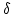

In order to translate from the user program's API to the data set's API, the translator process must have some knowledge about the types of the variables, and their semantics, that comprise the data set. It must also know something about the relations of those variables--even those relations which are only implicit in the data set's own API. This knowledge about the data set's structure is contained in a text description of the data set called the Dataset Description Structure.
The data set description structure (DDS) does not describe how the information in the data set is physically stored, nor does it describe how the data set's API is used to access that data. Those pieces of information are contained in the data set's API and in the translating server, respectively. The translating server uses the DDS to describe the structure of a particular data set to a translator--the DDS contains knowledge about the data set variables and the interrelations of those variables. In addition, the DDS can be used to satisfy some of the DODS supported APIs data set description calls. For example, netCDF has a function which returns the names of all the variables in a netCDF data file. The DDS can be used to get that information.
The DDS is a textual description of the variables and their classes that
comprise the entire data set. The data set descriptor syntax is based on the
variable declaration/definition syntax of C and C++. A variable that is a
member of one of the base type classes is declared by by writing the class
name followed by the variable name. The type constructor classes are declared
using C's brace notation. A grammar for the syntax is given in
Table  . Each of the keywords for the type constructor and base
type classes have already been described in
section
. Each of the keywords for the type constructor and base
type classes have already been described in
section  . The data set keyword has the same
syntactic function as structure but is used for the specific job of
enclosing the entire data set even when it does not technically need an
enclosing element (because at the outermost level it is a single element such
as a structure or sequence).
. The data set keyword has the same
syntactic function as structure but is used for the specific job of
enclosing the entire data set even when it does not technically need an
enclosing element (because at the outermost level it is a single element such
as a structure or sequence).
| data sets | data set |
| data sets data set | |
| data set | dataset { declarations } name ; |
| declarations | declaration |
| declarations declaration | |
| |
|
| declaration | list declaration |
| base-type var ; | |
| structure { declarations } var ; | |
| sequence { declarations } var ; | |
| function { independent : declarations dependent : declarations } var ; | |
| grid { array : declaration maps : declarations } var ; | |
| list | list |
| structure | structure |
| sequence | sequence |
| function | function |
| grid | grid |
| base-type | byte |
| int32 | |
| float64 | |
| string | |
| url | |
| var | id |
| var array-decl | |
| array-decl |  integer |
| id = integer | |
| name | id |
An example DDS entry is shown in Figure  . Suppose that three
experimenters have each performed temperature measurements at different
locations and at different times. This information could be held in a data set
consisting of a sequence of the experimenter's name, the time and location of
each measurement and the list of measurements themselves, and indicates that
there is a relation between the experimenter, location, time and temperature
called temp_measurement.
. Suppose that three
experimenters have each performed temperature measurements at different
locations and at different times. This information could be held in a data set
consisting of a sequence of the experimenter's name, the time and location of
each measurement and the list of measurements themselves, and indicates that
there is a relation between the experimenter, location, time and temperature
called temp_measurement.